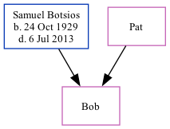

Bob
[
Home
] | [
Calendar
] | [
Surnames Index
] | [
Family History
]
The child of
Samuel Botsios
and
Pat
,
Bob
.
Parents
Samuel L
was born on Oct 24, 1929
Family Tree

Generated by
ged2site
. Last updated on Sep 9, 2024